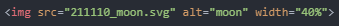

- SVG에 대해 알아보기
오늘은 SVG라는 것에 대해 알아보려고 합니다.
SVG란 Scalable Vector Graphics의 약자로 2차원 벡터 그래픽을 표현하기 위한 XML 기반의 파일 형식이라고 합니다.
핵심은 바로 SVG가 벡터 형식이라는 것인데, 벡터 이미지는 확대를 해도 픽셀이 깨지지 않습니다.
참고로 우리가 많이 쓰는 형식인 jpg, png, gif 등은 비트맵 형식으로, 확대하면 이미지가 깨지게 됩니다.
이 SVG 형식의 이미지를 삽입하는 방법은 비트맵 이미지를 삽입하는 방법과 동일합니다.
'img' 태그를 이용하면 됩니다.
다음과 같이 말이죠.
(저는 인터넷에 돌아다니는 아무 SVG 파일을 다운로드했습니다.)
화면을 확대하면 이미지가 깨지지 않는 것을 알 수 있습니다.
SVG 역시 이미지 형식이기 때문에 지난번에 공부했던 'background' 속성을 활용하여 페이지의 배경을 꾸며줄 수도 있습니다.
다음으로는 이 SVG를 만드는 가장 간단한 방법을 알아보려고 하는데, 이는 전문가의 영상으로 대체하겠습니다.
그럼 오늘은 여기까지 하겠습니다.
내일도 화이팅!